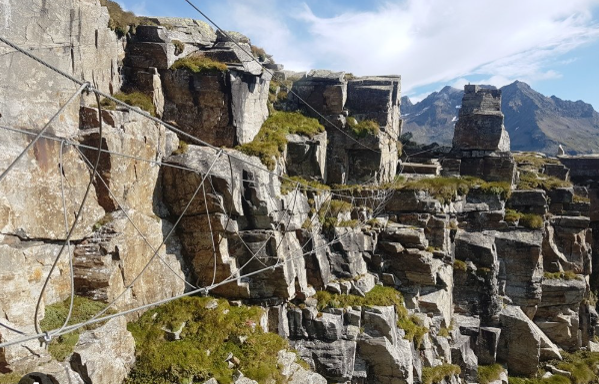

⬆ 4 634 m n. m. — najvyšší bod Švajčiarska
Hlavný cieľ celej výpravy. Výstup z Margherita Hut na Dufourspitze – najvyšší bod masívu Monte Rosa a celého Švajčiarska. Trasa tam a späť.
Zostup späť do Alagna Valsesia.
Rezervný deň – záložný termín pre výstupy posunuté zlým počasím, alebo oddych po náročnej expedicii. Alternatíva: Ferrata Cimalunga.
Ferrata Cimalunga – pozor, ferrata nie je zaznačená na mapy.cz, GPS súradnice sú len orientačné (45.8635486N, 7.9093328E).

Druhý rezervný deň, alebo odchod domov podľa situácie a nálady skupiny. Trasa ~1 050 km.
Podmienky z chát
Dátum rezervácie môžete zmeniť až 72 hodín pred dátumom príchodu, v závislosti od dostupnosti. Zálohu však nemožno použiť v inej chate, ako je tá, ktorá bola pôvodne reze[...]
Do 48 hodín pred dátumom príchodu je možné zmeniť písomne e-mailom IBA počet rezervovaných osôb bez sankcií.
Záloha pre zrušených účastníkov nebude vrátená, ale ostatní účastníci ju môžu použiť ako zálohu, ktorá sa im odpočíta z konečnej faktúry v útulku.
Ak potrebujete zrušiť potvrdenú rezerváciu, musíte o tom písomne informovať osobu, ktorá rezerváciu vykonala, e-mailom. Zrušenie nadobúda účinnosť dňom písomného oznámeni[...]
Storno poplatky sa vypočítajú takto:
- V prípade zrušenia rezervácie do 72 hodín pred dátumom príchodu vám vrátime zálohu po odpočítaní manipulačného poplatku 25,00 €. PRÍKLAD: Mám rezerváciu na 16. januá[...]
- V prípade zrušenia rezervácie menej ako 72 hodín pred dátumom príchodu alebo v prípade nedostavenia sa na pobyt sa záloha nevracia.
Najhorší scenár pre teba je teda 50 € storno za rezerváciu dvoch chát. Chaty sú dopredu zaplatené zálohy, za dve noci je potrebné zaplatiť 110€ predom.